Assignment 3 — Neural Volume Rendering and Gaussian Splatting
16-825: Learning for 3D Vision · Haotian (hzhan2)
1. Differentiable Volume Rendering
1.3 Ray sampling
I put the pixel grid at depth 1 in NDC, unproject it to world space, and subtract the camera center to get normalized ray directions.
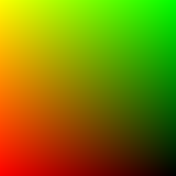
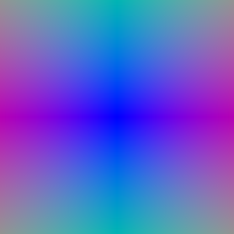
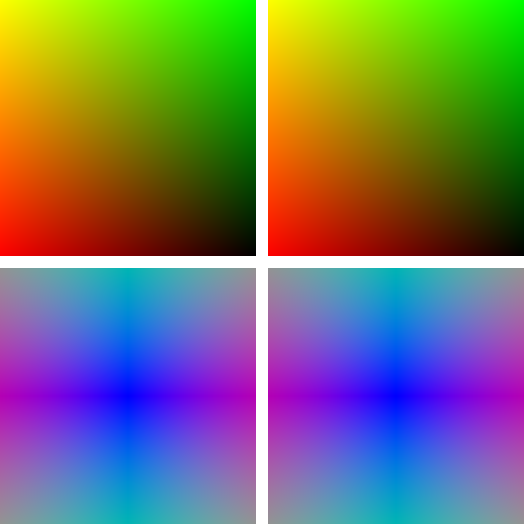
1.4 Point sampling
64 evenly spaced depths between 0 and 5; each point is origin + depth × direction. Below are the samples from the first camera.
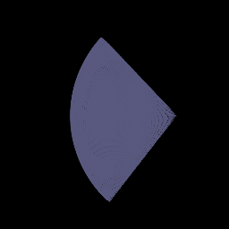
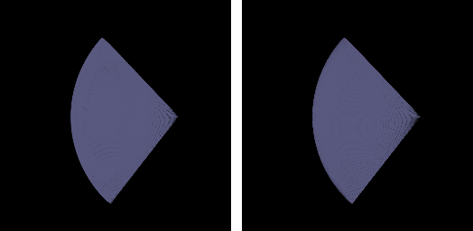
1.5 Volume rendering
Each sample’s weight is its opacity times the transmittance of the samples in front of it (T = 1 for the first one). The depth map is normalized by its max.
alpha_i = 1 - exp(-sigma_i * delta_i)
T_i = prod_{j<i} (1 - alpha_j)
color = sum_i T_i * alpha_i * c_i
depth = sum_i T_i * alpha_i * z_i
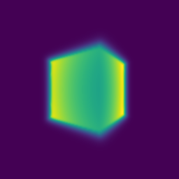
2. Optimizing a Basic Implicit Volume
Each step I train on 4,096 random pixels (shuffle the grid, keep the first n_pixels) with MSE loss, Adam at lr 0.0005 for 1,000 epochs. Final box, rounded to 0.01:
| x | y | z | |
|---|---|---|---|
| Box center | 0.25 | 0.25 | 0.00 |
| Box side lengths | 2.01 | 1.50 | 1.50 |
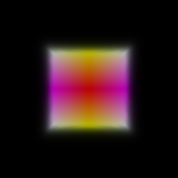
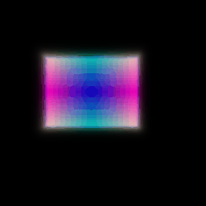
Other training views
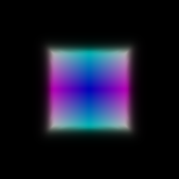
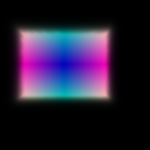
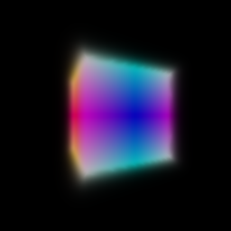
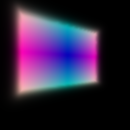
3. Optimizing a Neural Radiance Field (NeRF)
6-frequency harmonic embedding, 6-layer 128-wide MLP with a skip at layer 3, ReLU for density and Sigmoid for color. Trained on lego at 128×128 for 250 epochs, 1,024 rays and 128 samples per ray. I ran it twice and both look about the same.
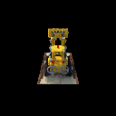

4.1 View Dependence
The color head also gets the ray direction (2-frequency embedding). Density only depends on position, so geometry stays consistent across views.
Trade-off: more view dependence can capture the specular highlights on the spheres, but the network can also overfit by explaining each training image with view-specific color, which gives floaters and flicker at new views. Less view dependence generalizes better but makes shiny things look matte.
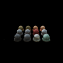
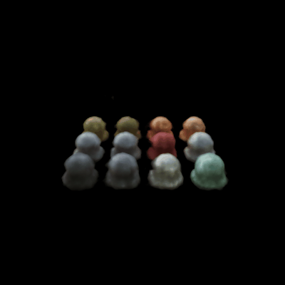
4.2 Coarse/Fine Sampling
A coarse NeRF uses 64 stratified samples. I use its weights as a PDF to draw 128 more samples, and a fine NeRF renders all 192. Loss = MSE(coarse) + MSE(fine).
Lego, 128×128, 100 held-out views, epoch 200:
| Model | Train speed | Render time / image | Val PSNR |
|---|---|---|---|
| Single network, 128 samples | 41 it/s | 146 ms | 24.55 dB |
| Single network, 192 samples | 26 it/s | 223 ms | 24.76 dB |
| Coarse/fine, 64 + 128 samples | 22 it/s | 300 ms | 24.80 dB |
Speed vs. quality: coarse/fine is the slowest (two networks per ray) but gets the best PSNR, since more samples land near the surface. At this resolution the gain is small. (The 192-sample run used seed 2; seed 1 collapsed to black.)
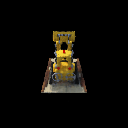
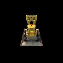
4.3 VolSDF
6-layer 128-wide MLP for distance (no output activation) plus a small color head. Eikonal loss weight 0.02. Density = α · Ψβ(−d), the Laplace CDF from the VolSDF paper.
Intuition for alpha and beta
α is the density inside the object. β is how wide the transition from empty to solid is around the surface; smaller β means a sharper surface.
- How does beta bias the SDF? High β gives a blurry, inflated surface and loses thin parts. Low β forces the zero level set to sit right on the surface.
- Easier to train? High β, because points near the surface still get gradients. With low β gradients mostly vanish, which is why my β = 0.01 run failed.
- More accurate surface? Low β (if it trains), since the color has to come from points right on the surface.
Hyper-parameter experiments (lego, α = 10, 250 epochs)
| β | Final loss | Result |
|---|---|---|
| 0.2 | 0.011 | Trains, but color is blurrier and the mesh is blobby, with a thick slab of floor geometry. |
| 0.05 | 0.008 | Best. Sharp color and a recognizable bulldozer mesh, with a few floaters under the base. |
| 0.01 | 0.039 | Failed. Density never formed, the render is mostly black, and marching cubes found an empty mesh. |
Best: α = 10, β = 0.05. Sharp enough for a clean surface, but still wide enough to train from scratch.
Best result (β = 0.05)
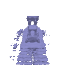
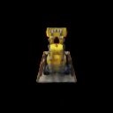
Other beta values
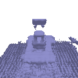
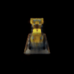
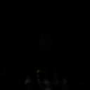
5. 3D Gaussian Rasterization
I project each 3D Gaussian to 2D, sort by depth, and alpha-blend front to back. Color, depth and mask all use the same weights. The 4 unit tests pass. Below is the pre-trained chair with DC color only (RGB | depth | mask), 2,048 Gaussians per splat.
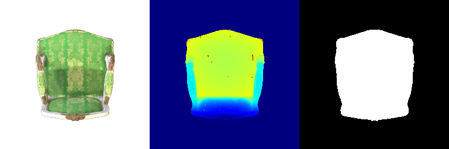
render.pyAll 32 frames of the Q5 render (RGB | depth | mask)
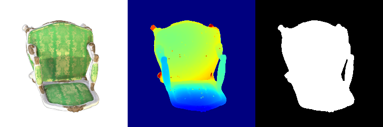
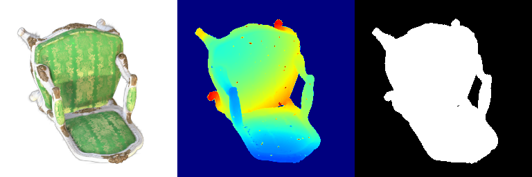
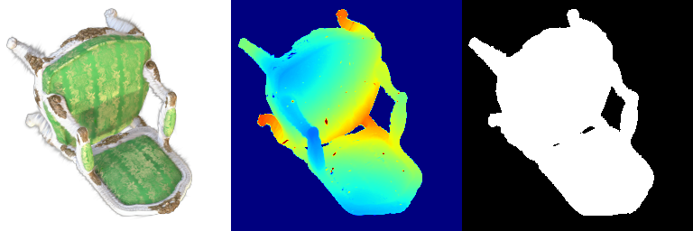
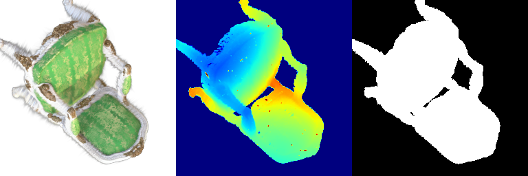
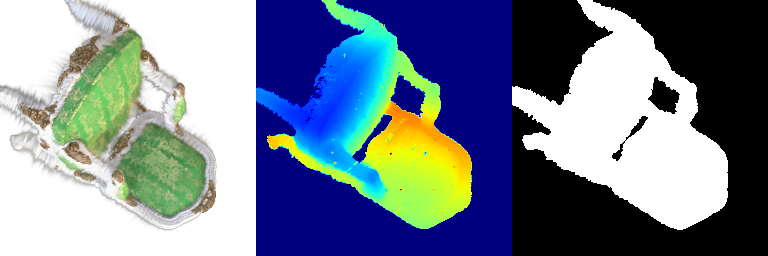
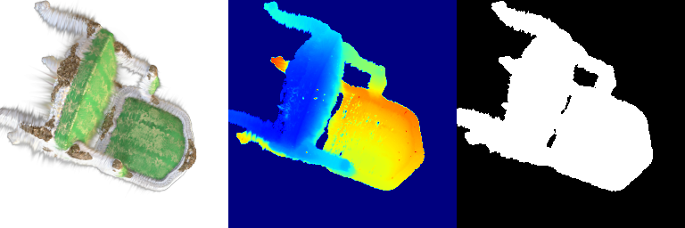
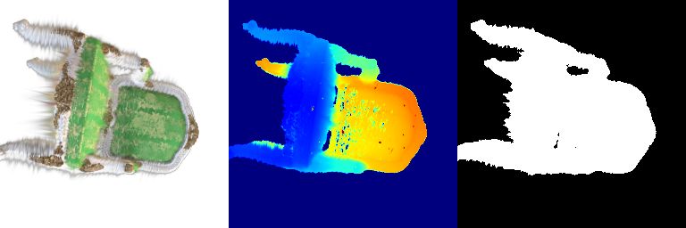
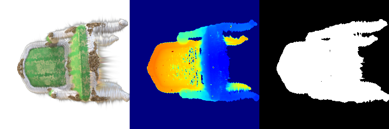
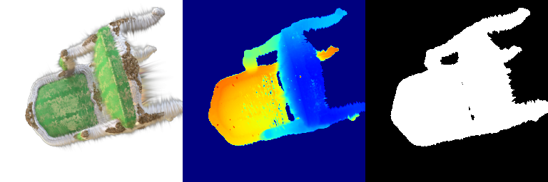
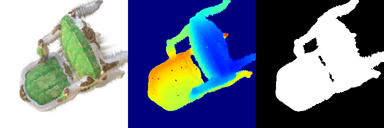
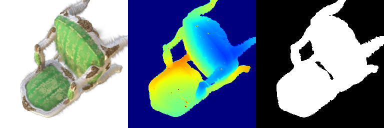
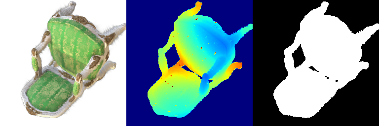
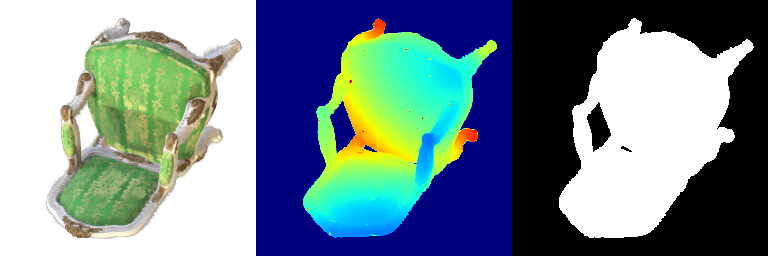
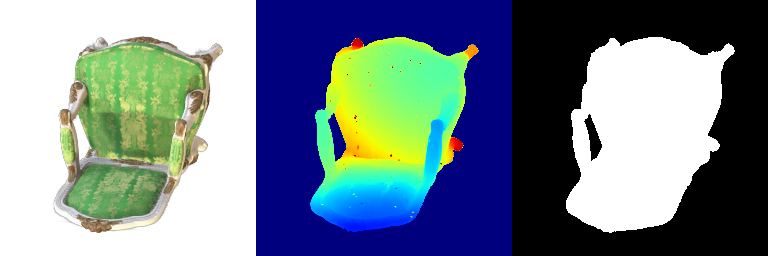
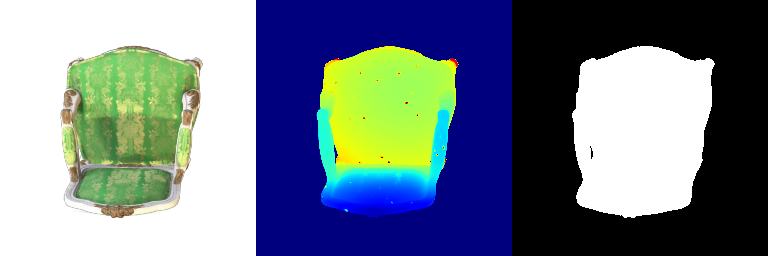
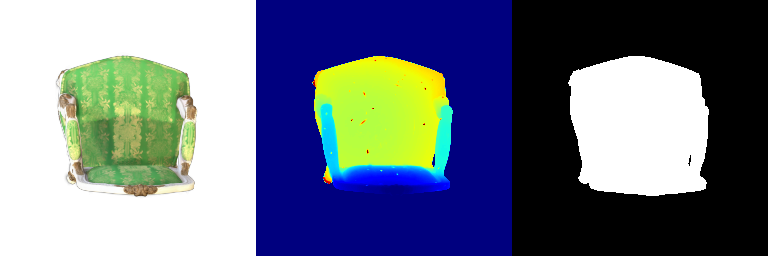
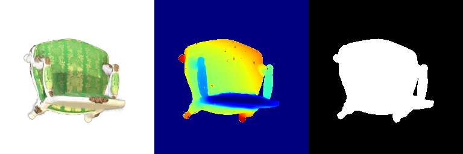
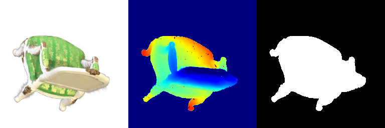
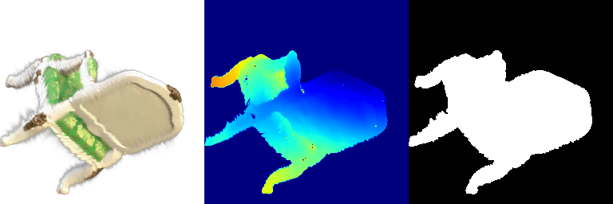
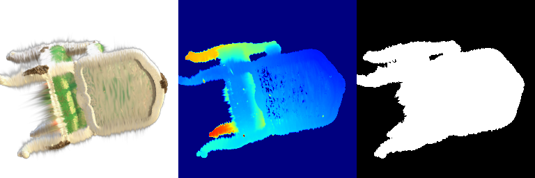
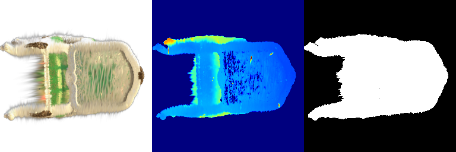
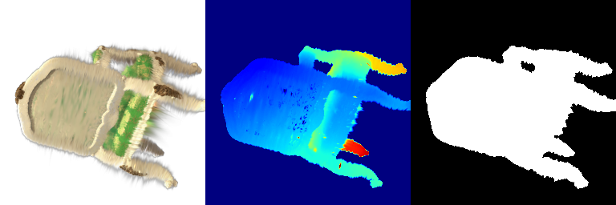
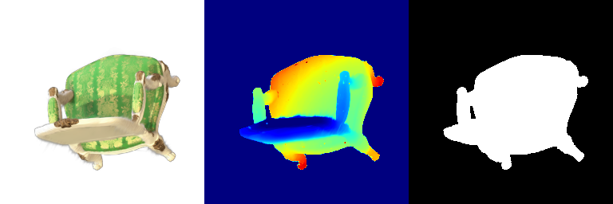
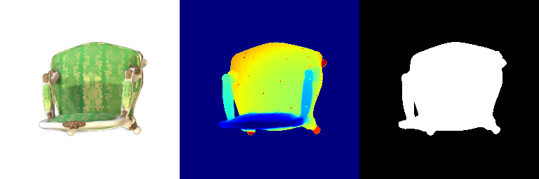
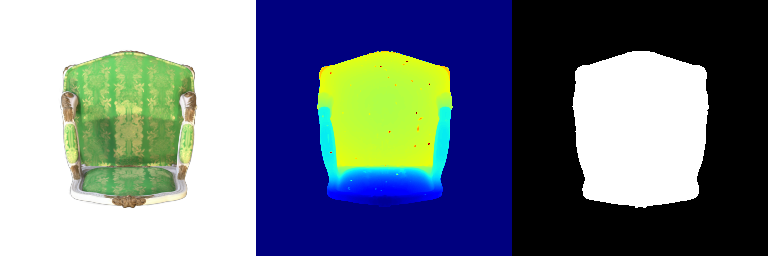
6. Training 3D Gaussian Representations (truck)
Isotropic Gaussians are initialized from the truck point cloud, and I train their means, scales, opacities and colors with Adam and an L1 loss.
| Setting | Value |
|---|---|
| Gaussians | Isotropic, initialized from the provided point cloud |
| Learning rates (Adam) | means 0.0002, scales 0.001, opacities 0.01, colours 0.01 |
| Loss | L1 between rendered and ground-truth image |
| Iterations | 1000 |
| Mean PSNR | 28.378 |
| Mean SSIM | 0.930 |
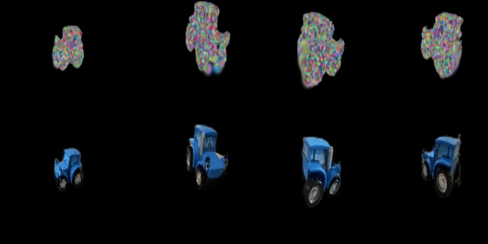
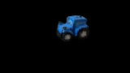
7.1 Rendering Using Spherical Harmonics
Color now uses all SH coefficients (degree 3), evaluated along the camera-to-Gaussian direction.
Side-by-side comparisons (left: DC only, right: full SH, same frame)
SH gives much more contrast on the fabric: darker folds and a clearer gold pattern. DC-only looks flat and washed out.
From the top, the cushions are darker and the shading on the backrest shows its curve. The trim looks about the same.
Same as frame 0: shadows on the fabric are darker and the embroidery brighter. DC is just an average color, so it can’t show this.
From below they look almost the same. Depth and mask never change, since SH only affects color.
All 32 frames of the Q7.1 render (RGB | depth | mask)
7.2 Training on a Harder Scene (materials)
Both runs use init_type="random" with 10,000 Gaussians, evaluated on 100 views at 128×128. The baseline is my unchanged Q6 setup.
| Baseline (Q6 setup) | Improved | |
|---|---|---|
| Iterations | 1000 | 2500 |
| Learning rates | means 0.0002, scales 0.001, opacities 0.01, colours 0.01 | means 0.002 → 0.00002 (exponential decay), scales 0.005, opacities 0.05, colours 0.01, quaternions 0.001 |
| Loss | L1 | 0.8 · L1 + 0.2 · (1 − SSIM) |
| Gaussians | 10,000 isotropic | 10,000 → 25,499 anisotropic (densified) |
| Mean PSNR | 16.293 | 24.372 |
| Mean SSIM | 0.616 | 0.891 |
Baseline
The baseline only learns a blob in the middle: the random points start near the origin and the means learning rate is too small to reach the objects.
Improved
Modifications in the best method (compared to Q6)
- Better init: points spread uniformly in a radius-1.2 ball, starting opacity 0.1, scales from nearest-neighbour distance.
- Anisotropic Gaussians with learned rotations.
- Higher learning rates: means 0.002 decaying to 0.00002, opacities 0.05, scales 0.005, quaternions 0.001.
- Loss: 0.8 · L1 + 0.2 · (1 − SSIM), like the paper.
- Simple densification: from iteration 300 to 1800, clone or split Gaussians with large gradients, prune transparent or huge ones (max 30,000), and reset opacity at iteration 1000.
- 2500 iterations instead of 1000.
I also used gradient checkpointing in the renderer so training fits on my 8 GB GPU (doesn’t change results).